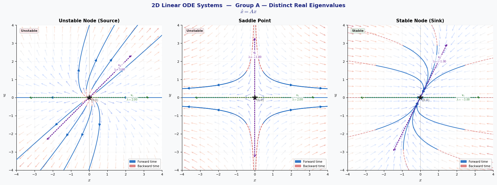
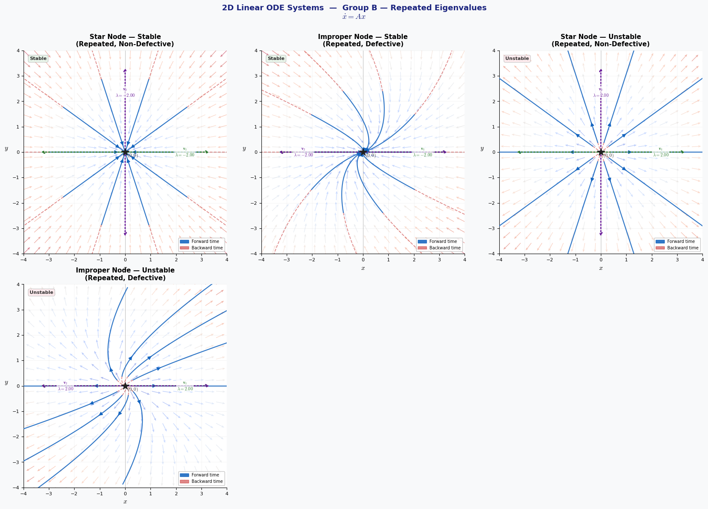
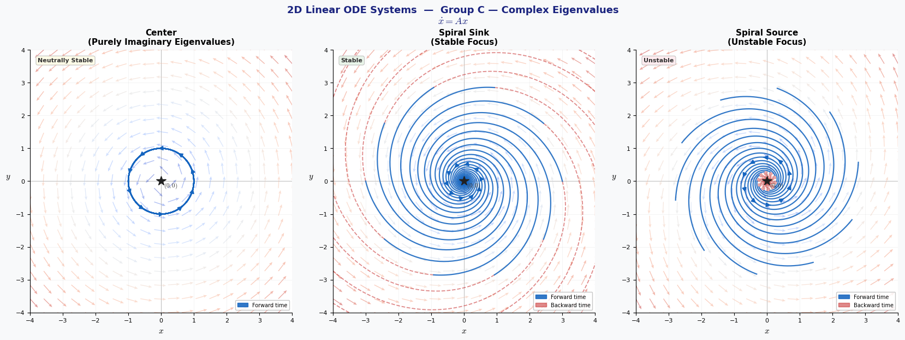
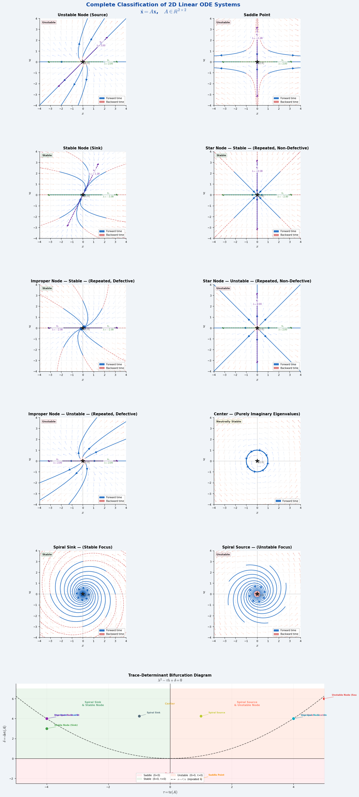

![]()
"""
╔══════════════════════════════════════════════════════════════════════════════╗
║ PHASE PORTRAIT CLASSIFICATION OF 2D LINEAR AUTONOMOUS ODE SYSTEMS ║
║ dx/dt = Ax, A ∈ ℝ²ˣ² ║
╠══════════════════════════════════════════════════════════════════════════════╣
║ ║
║ Ten canonical qualitative behaviors at the equilibrium (0,0): ║
║ ║
║ GROUP A — Distinct Real Eigenvalues ║
║ 1. Unstable Node (Source) λ₁ > λ₂ > 0 ║
║ 2. Saddle Point λ₁ > 0 > λ₂ ║
║ 3. Stable Node (Sink) 0 > λ₁ > λ₂ ║
║ ║
║ GROUP B — Repeated Eigenvalues ║
║ 4. Star Node — Stable λ = α < 0, A = αI (non-defective) ║
║ 5. Improper Node — Stable λ = α < 0, Jordan block (defective) ║
║ 6. Star Node — Unstable λ = α > 0, A = αI (non-defective) ║
║ 7. Improper Node — Unstable λ = α > 0, Jordan block (defective) ║
║ ║
║ GROUP C — Complex Eigenvalues ║
║ 8. Center λ = ±βi (Re = 0) ║
║ 9. Spiral Sink (Stable Focus) λ = α ± βi, α < 0 ║
║ 10. Spiral Source (Unstable Focus) λ = α ± βi, α > 0 ║
║ ║
║ BONUS: Trace–Determinant bifurcation diagram ║
║ ║
║ Usage: python ode_phase_portraits.py ║
║ Requires: numpy matplotlib scipy ║
╚══════════════════════════════════════════════════════════════════════════════╝
"""
# ══════════════════════════════════════════════════════════════════════════════
# IMPORTS & GLOBAL CONFIGURATION
# ══════════════════════════════════════════════════════════════════════════════
import os
import numpy as np
import matplotlib.pyplot as plt
import matplotlib.patches as mpatches
import matplotlib.gridspec as gridspec
import matplotlib.patheffects as pe
from matplotlib.colors import Normalize
from matplotlib.patches import FancyArrowPatch
from scipy.integrate import solve_ivp
import warnings
warnings.filterwarnings("ignore")
# ── Output directory ──────────────────────────────────────────────────────────
# __file__ exists when running as a .py script; falls back to the current
# working directory when running inside a Jupyter notebook or REPL.
try:
_base = os.path.dirname(os.path.abspath(__file__))
except NameError:
_base = os.getcwd()
OUTPUT_DIR = os.path.join(_base, "ode_figures")
os.makedirs(OUTPUT_DIR, exist_ok=True)
print(f" 📁 Figures will be saved to: {OUTPUT_DIR}")
# ── Matplotlib aesthetic settings ─────────────────────────────────────────────
plt.rcParams.update({
"figure.facecolor" : "#F8F9FA",
"axes.facecolor" : "#FFFFFF",
"axes.spines.top" : False,
"axes.spines.right" : False,
"axes.labelsize" : 11,
"axes.titlesize" : 11,
"font.family" : "DejaVu Sans",
"mathtext.fontset" : "cm",
"xtick.labelsize" : 8,
"ytick.labelsize" : 8,
})
# ── Consistent color palette used throughout ──────────────────────────────────
PAL = {
"fwd" : "#1565C0", # forward-time trajectories (rich blue)
"bwd" : "#C62828", # backward-time trajectories (deep red)
"eq" : "#212121", # equilibrium marker (near-black)
"eig1" : "#2E7D32", # first eigenvector (forest green)
"eig2" : "#6A1B9A", # second eigenvector (deep purple)
"field_cmap" : "coolwarm",
"stable" : "#E8F5E9", # badge background — stable
"unstable" : "#FFEBEE", # badge background — unstable
"neutral" : "#FFFDE7", # badge background — neutrally stable
}
# ══════════════════════════════════════════════════════════════════════════════
# SECTION 1 ─ CORE MATHEMATICAL FUNCTIONS
# ══════════════════════════════════════════════════════════════════════════════
def system_ode(t, state, A):
"""
Right-hand side of the autonomous linear ODE: d(state)/dt = A · state.
The system is autonomous (A is constant in time), so t is only present
to satisfy the interface expected by scipy.integrate.solve_ivp.
Parameters
----------
t : float Current time (not used internally)
state : ndarray (2,) Current state vector [x, y]ᵀ
A : ndarray (2,2) Constant system matrix
Returns
-------
ndarray (2,) : [dx/dt, dy/dt]ᵀ = A @ [x, y]ᵀ
"""
return A @ state
def compute_eigenanalysis(A, verbose=True):
"""
Compute eigenvalues and right eigenvectors of matrix A, and optionally
print a formatted diagnostic report to the console.
The characteristic equation is:
λ² − tr(A)·λ + det(A) = 0
with discriminant Δ = tr(A)² − 4·det(A).
Parameters
----------
A : ndarray (2,2) System matrix
verbose : bool When True, print the formatted report
Returns
-------
eigenvalues : ndarray (2,) complex — eigenvalues of A
eigenvectors : ndarray (2,2) columns are right eigenvectors
"""
eigenvalues, eigenvectors = np.linalg.eig(A)
tr = float(np.trace(A))
det = float(np.linalg.det(A))
disc = tr**2 - 4.0 * det
if verbose:
w = 56
print(f"\n ┌{'─'*w}┐")
print(f" │{'Matrix A':^{w}}│")
print(f" ├{'─'*w}┤")
print(f" │ ⎡{A[0,0]:+9.4f} {A[0,1]:+9.4f} ⎤{'':>25}│")
print(f" │ ⎣{A[1,0]:+9.4f} {A[1,1]:+9.4f} ⎦{'':>25}│")
print(f" ├{'─'*w}┤")
print(f" │ tr(A) = {tr:+.4f} det(A) = {det:+.4f}{'':>18}│")
print(f" │ Δ = tr²−4·det = {disc:+.4f}{'':>27}│")
print(f" ├{'─'*w}┤")
print(f" │ Eigenvalues & Eigenvectors:{'':>27}│")
for i, (lam, vec) in enumerate(zip(eigenvalues, eigenvectors.T)):
if abs(lam.imag) > 1e-10:
s = f"λ{i+1} = {lam.real:+.4f} {'+'if lam.imag>=0 else ''}{lam.imag:.4f}i (complex)"
else:
v = vec.real
s = (f"λ{i+1} = {lam.real:+.4f} → "
f"v{i+1} = [{v[0]:+.4f}, {v[1]:+.4f}]ᵀ")
print(f" │ {s:<{w-2}}│")
print(f" └{'─'*w}┘")
return eigenvalues, eigenvectors
def classify_system(A):
"""
Automatically classify the qualitative behavior of the equilibrium at
the origin, using the trace–determinant–discriminant criterion.
Decision tree (τ = tr A, δ = det A, Δ = τ²−4δ):
┌─────────────────────────────────────────────────────────────┐
│ δ < 0 → Saddle Point │
│ δ > 0, Δ < 0: │
│ τ = 0 → Center │
│ τ < 0 → Spiral Sink │
│ τ > 0 → Spiral Source │
│ δ > 0, Δ ≈ 0: │
│ non-defective → Star Node │
│ defective → Improper Node (Jordan) │
│ δ > 0, Δ > 0: │
│ τ < 0 → Stable Node │
│ τ > 0 → Unstable Node │
└─────────────────────────────────────────────────────────────┘
Parameters
----------
A : ndarray (2,2)
Returns
-------
name : str Full descriptive classification
stability : str 'Stable', 'Unstable', or 'Neutrally Stable'
short : str Short label used for plot badges
"""
tr = float(np.trace(A))
det = float(np.linalg.det(A))
disc = tr**2 - 4.0 * det
# ── Saddle: det < 0 ────────────────────────────────────────────────────
if det < -1e-10:
return "Saddle Point", "Unstable", "Saddle"
# ── Complex eigenvalues: discriminant < 0 ──────────────────────────────
if disc < -1e-10:
alpha = tr / 2.0 # real part of eigenvalues
if abs(alpha) < 1e-10:
return "Center", "Neutrally Stable", "Center"
if alpha < 0:
return "Spiral Sink (Stable Focus)", "Stable", "Spiral Sink"
return "Spiral Source (Unstable Focus)", "Unstable", "Spiral Source"
# ── Repeated eigenvalue: discriminant ≈ 0 ─────────────────────────────
if abs(disc) < 1e-8:
lam = tr / 2.0
# Defectiveness check: A − λI has rank 1 iff defective
B = A - lam * np.eye(2)
defective = np.linalg.matrix_rank(B, tol=1e-7) > 0
kind = "Defective (Improper Node)" if defective else "Non-Defective (Star Node)"
stab = "Stable" if lam < -1e-10 else "Unstable"
return f"Repeated λ={lam:.2f} — {kind}", stab, kind[:4]
# ── Distinct real eigenvalues: disc > 0, det > 0 ───────────────────────
if tr < 0:
return "Stable Node (Sink)", "Stable", "Stable Node"
return "Unstable Node (Source)", "Unstable", "Unstable Node"
def generate_initial_conditions(n=10, radius=2.5):
"""
Place n starting points uniformly on a circle of given radius.
Using a circle ensures all phase-space directions are sampled equally,
giving a complete picture of the flow geometry.
Parameters
----------
n : int Number of initial conditions
radius : float Circle radius (centred at origin)
Returns
-------
list of [x₀, y₀] pairs
"""
angles = np.linspace(0.0, 2.0 * np.pi, n, endpoint=False)
return [[radius * np.cos(a), radius * np.sin(a)] for a in angles]
# ══════════════════════════════════════════════════════════════════════════════
# SECTION 2 ─ VECTOR FIELD
# ══════════════════════════════════════════════════════════════════════════════
def compute_vector_field(A, xlim=(-4, 4), ylim=(-4, 4), density=20):
"""
Evaluate F(x,y) = A·[x,y]ᵀ on a uniform grid and normalise for display.
Normalisation (dividing by magnitude) gives each arrow the same length,
which makes the direction of flow legible even far from the origin where
the field magnitude is very large.
Parameters
----------
A : ndarray (2,2) System matrix
xlim : (x_min, x_max)
ylim : (y_min, y_max)
density : int Grid points per axis
Returns
-------
X, Y : ndarray (density×density) grid coordinates
U, V : ndarray normalised direction components
M : ndarray raw magnitudes (used for colouring)
"""
x = np.linspace(xlim[0], xlim[1], density)
y = np.linspace(ylim[0], ylim[1], density)
X, Y = np.meshgrid(x, y)
# Linear field: [dx/dt, dy/dt]ᵀ = A @ [x, y]ᵀ
U = A[0, 0] * X + A[0, 1] * Y
V = A[1, 0] * X + A[1, 1] * Y
M = np.hypot(U, V) # vector magnitude at each point
M_safe = np.where(M < 1e-12, 1.0, M) # guard against 0/0 at origin
return X, Y, U / M_safe, V / M_safe, M
# ══════════════════════════════════════════════════════════════════════════════
# SECTION 3 ─ TRAJECTORY SIMULATION
# ══════════════════════════════════════════════════════════════════════════════
def simulate_trajectories(A, initial_conditions,
t_span=(0.0, 5.0), n_points=700,
both_directions=True):
"""
Numerically integrate dx/dt = Ax from each initial condition using RK45.
For each starting point we optionally integrate both:
• forward in time (t: 0 → +T) to observe long-term fate of orbits
• backward in time (t: 0 → −T) to reveal the past history of orbits
Parameters
----------
A : ndarray (2,2)
initial_conditions : list of [x₀, y₀]
t_span : (t₀, T) — forward integration interval
n_points : int — evaluation points per trajectory
both_directions : bool — also integrate backward if True
Returns
-------
list of dicts, each containing:
'forward' : ndarray (2, n_points)
'backward' : ndarray (2, n_points) (present only if both_directions)
"""
t0, T = t_span
t_fwd = np.linspace(t0, T, n_points)
t_bwd = np.linspace(t0, -T, n_points)
trajectories = []
for ic in initial_conditions:
traj = {}
# ── Forward integration ────────────────────────────────────────────
sol = solve_ivp(
system_ode, [t_fwd[0], t_fwd[-1]], ic,
t_eval=t_fwd, args=(A,),
method="RK45", rtol=1e-8, atol=1e-10,
)
traj["forward"] = sol.y # shape (2, n_points)
# ── Backward integration (reverse time, reveals past dynamics) ─────
if both_directions:
sol_b = solve_ivp(
system_ode, [t_bwd[0], t_bwd[-1]], ic,
t_eval=t_bwd, args=(A,),
method="RK45", rtol=1e-8, atol=1e-10,
)
traj["backward"] = sol_b.y
trajectories.append(traj)
return trajectories
# ══════════════════════════════════════════════════════════════════════════════
# SECTION 4 ─ PHASE PORTRAIT PLOTTER
# ══════════════════════════════════════════════════════════════════════════════
def _add_flow_arrow(ax, x, y, frac=0.40, color="#1565C0"):
"""
Annotate a trajectory with a small directional arrowhead.
The arrow is placed at position `frac` along the valid (non-NaN) part
of the trajectory, indicating the direction of the flow.
"""
valid = np.where(~np.isnan(x))[0]
if len(valid) < 10:
return
idx = valid[int(frac * len(valid))]
if idx + 1 >= len(x) or np.isnan(x[idx + 1]):
return
ax.annotate(
"",
xy=(x[idx + 1], y[idx + 1]),
xytext=(x[idx], y[idx]),
arrowprops=dict(
arrowstyle="-|>", color=color,
lw=1.3, mutation_scale=12,
),
zorder=4,
)
def _mask_trajectory(xy, clip_factor=5.0, xlim=(-4,4), ylim=(-4,4)):
"""
Replace out-of-range values with NaN so matplotlib splits the line.
This prevents long, distracting lines when a trajectory exits the
axis bounds (common for unstable systems).
"""
x, y = xy
cx = clip_factor * abs(xlim[1])
cy = clip_factor * abs(ylim[1])
bad = (np.abs(x) > cx) | (np.abs(y) > cy)
return np.where(bad, np.nan, x), np.where(bad, np.nan, y)
def plot_phase_portrait(A, ax,
title="Phase Portrait",
xlim=(-4, 4), ylim=(-4, 4),
initial_conditions=None,
t_span=(0.0, 5.0),
grid_density=20,
show_eigenvectors=True,
both_directions=True):
"""
Draw a complete phase portrait on a Matplotlib Axes.
The portrait includes:
① Normalised quiver field coloured by magnitude
② Forward-time trajectories (blue, solid) with directional arrows
③ Backward-time trajectories (red, dashed) when both_directions=True
④ Equilibrium point marker at origin
⑤ Real eigenvector lines (when eigenvalues are real)
⑥ Stability badge (coloured label) and legend
Parameters
----------
A : ndarray (2,2) System matrix
ax : Axes Target Matplotlib axes
title : str Plot title
xlim, ylim : (min, max) Axis limits
initial_conditions: list or None Starting points; auto-generated if None
t_span : (t₀, T) Forward integration interval
grid_density : int Vector field resolution
show_eigenvectors : bool Draw eigenvectors if real
both_directions : bool Also integrate backward in time
Returns
-------
ax : Axes (modified in place and returned)
"""
# ── ① Vector field ─────────────────────────────────────────────────────
X, Y, U, V, M = compute_vector_field(A, xlim, ylim, grid_density)
ax.quiver(
X, Y, U, V, M,
cmap=PAL["field_cmap"],
alpha=0.50,
scale=22, scale_units="width",
width=0.0028, headwidth=4, headlength=5, headaxislength=4,
norm=Normalize(vmin=0.0, vmax=max(M.max(), 1e-6)),
zorder=1,
)
# ── ② & ③ Trajectories ─────────────────────────────────────────────────
if initial_conditions is None:
initial_conditions = generate_initial_conditions(n=10, radius=2.5)
trajs = simulate_trajectories(
A, initial_conditions, t_span,
both_directions=both_directions,
)
for traj in trajs:
# Forward trajectory
xf, yf = _mask_trajectory(traj["forward"], xlim=xlim, ylim=ylim)
ax.plot(xf, yf, color=PAL["fwd"], lw=1.6, alpha=0.88, zorder=3)
_add_flow_arrow(ax, xf, yf, frac=0.40, color=PAL["fwd"])
# Backward trajectory
if "backward" in traj:
xb, yb = _mask_trajectory(traj["backward"], xlim=xlim, ylim=ylim)
ax.plot(xb, yb, color=PAL["bwd"],
lw=1.3, alpha=0.55, ls="--", zorder=2)
# ── ④ Eigenvector lines (only when eigenvalues are real) ───────────────
if show_eigenvectors:
vals, vecs = np.linalg.eig(A)
if np.all(np.abs(vals.imag) < 1e-10):
eig_colors = [PAL["eig1"], PAL["eig2"]]
ax_range = 0.42 * min(abs(xlim[1] - xlim[0]),
abs(ylim[1] - ylim[0]))
for i, (lam, vec, ec) in enumerate(zip(vals, vecs.T, eig_colors)):
d = vec.real
d = d / np.linalg.norm(d) if np.linalg.norm(d) > 1e-12 else d
sc = ax_range
# Draw double-headed arrow along eigenvector direction
ax.annotate(
"",
xy=( d[0]*sc, d[1]*sc),
xytext=(-d[0]*sc, -d[1]*sc),
arrowprops=dict(
arrowstyle="<->", color=ec,
lw=2.0, linestyle="dotted",
),
zorder=5,
)
# Label with eigenvalue
tx, ty = d[0]*sc*0.70, d[1]*sc*0.70
ax.text(
tx, ty,
f"$\\mathbf{{v}}_{i+1}$\n$\\lambda={lam.real:.2f}$",
color=ec, fontsize=7.5, fontweight="bold",
ha="center", va="center", zorder=6,
bbox=dict(boxstyle="round,pad=0.15",
facecolor="white", alpha=0.7, edgecolor="none"),
)
# ── ⑤ Equilibrium point ────────────────────────────────────────────────
ax.plot(0, 0, marker="*", color=PAL["eq"],
markersize=13, zorder=7, clip_on=False)
ax.text(
0.08, -0.18, "$(0,0)$",
color="#333333", fontsize=8, zorder=8,
)
# ── Axes cosmetics ─────────────────────────────────────────────────────
ax.axhline(0, color="#BDBDBD", lw=0.7, zorder=0)
ax.axvline(0, color="#BDBDBD", lw=0.7, zorder=0)
ax.grid(True, alpha=0.12, color="gray", lw=0.5)
ax.set_xlim(xlim)
ax.set_ylim(ylim)
ax.set_aspect("equal", "box")
ax.set_xlabel("$x$")
ax.set_ylabel("$y$", rotation=0, labelpad=10)
ax.set_title(title, fontsize=11, fontweight="bold", pad=7)
# ── ⑥ Stability badge ─────────────────────────────────────────────────
_, stability, _ = classify_system(A)
badge_color = {
"Stable" : PAL["stable"],
"Unstable" : PAL["unstable"],
"Neutrally Stable": PAL["neutral"],
}.get(stability, "#F5F5F5")
ax.text(
0.03, 0.97, stability,
transform=ax.transAxes,
fontsize=8, fontweight="bold",
va="top", ha="left", color="#333333",
bbox=dict(boxstyle="round,pad=0.30", facecolor=badge_color,
alpha=0.92, edgecolor="#BDBDBD", lw=0.8),
zorder=9,
)
# Legend
handles = [mpatches.Patch(color=PAL["fwd"], alpha=0.88, label="Forward time")]
if both_directions:
handles.append(
mpatches.Patch(color=PAL["bwd"], alpha=0.55, label="Backward time")
)
ax.legend(handles=handles, loc="lower right",
fontsize=7, framealpha=0.85, edgecolor="#BDBDBD")
return ax
# ══════════════════════════════════════════════════════════════════════════════
# SECTION 5 ─ CASE DEFINITIONS
# ══════════════════════════════════════════════════════════════════════════════
def get_all_cases():
"""
Return the ten canonical 2D linear system cases as a list of dicts.
Each dict has the following keys:
name : str descriptive plot title
group : str one of three groups (A, B, C)
A : ndarray system matrix
t_span : tuple (t₀, T) for forward integration
xlim, ylim : tuple axis limits
ics_radius : float initial-condition circle radius
both_dirs : bool integrate backward in time
description : str multi-line console description
Matrix choices are verified so that eigenvalues match the stated values.
"""
return [
# ══════════════════════════════════════════════════════════════════
# GROUP A — DISTINCT REAL EIGENVALUES
# ══════════════════════════════════════════════════════════════════
dict(
name="Unstable Node (Source)",
group="Group A — Distinct Real Eigenvalues",
# A = upper-triangular → λ₁=2, λ₂=3
# Eigenvectors: v₁=[1,0], v₂=[1,1] (non-axis directions visible)
A=np.array([[2.0, 1.0],
[0.0, 3.0]]),
t_span=(0.0, 1.8),
xlim=(-4, 4), ylim=(-4, 4),
ics_radius=0.5,
both_dirs=True,
description=(
"Eigenvalues: λ₁=2, λ₂=3 (both positive)\n"
"Both eigenvalues positive → all trajectories flee the origin exponentially.\n"
"Near origin, motion is dominated by the slow mode (λ₁=2); far out, by fast (λ₂=3).\n"
"General solution: x(t) = c₁·v₁·e^{2t} + c₂·v₂·e^{3t}\n"
"Stability: UNSTABLE"
),
),
dict(
name="Saddle Point",
group="Group A — Distinct Real Eigenvalues",
# Diagonal → λ₁=2 (x-axis), λ₂=-1 (y-axis)
# Clearest possible illustration of stable/unstable manifolds
A=np.array([[ 2.0, 0.0],
[ 0.0,-1.0]]),
t_span=(0.0, 2.5),
xlim=(-4, 4), ylim=(-4, 4),
ics_radius=1.5,
both_dirs=True,
description=(
"Eigenvalues: λ₁=2, λ₂=−1 (opposite signs)\n"
"det(A) < 0 → always a saddle (always unstable).\n"
"Stable manifold (y-axis, v₂): orbits approach origin along y.\n"
"Unstable manifold (x-axis, v₁): orbits flee along x.\n"
"Stability: UNSTABLE (saddle is always unstable)"
),
),
dict(
name="Stable Node (Sink)",
group="Group A — Distinct Real Eigenvalues",
# A = upper-triangular → λ₁=-3, λ₂=-1
# Eigenvectors: v₁=[1,0], v₂=[1,2]
A=np.array([[-3.0, 1.0],
[ 0.0,-1.0]]),
t_span=(0.0, 5.0),
xlim=(-4, 4), ylim=(-4, 4),
ics_radius=3.0,
both_dirs=True,
description=(
"Eigenvalues: λ₁=−3, λ₂=−1 (both negative)\n"
"Both eigenvalues negative → all trajectories converge to origin.\n"
"Trajectories approach tangentially to slow eigenvector (λ₂=−1).\n"
"General solution: x(t) = c₁·v₁·e^{−3t} + c₂·v₂·e^{−t}\n"
"Stability: STABLE (asymptotically stable)"
),
),
# ══════════════════════════════════════════════════════════════════
# GROUP B — REPEATED EIGENVALUES
# ══════════════════════════════════════════════════════════════════
dict(
name="Star Node — Stable\n(Repeated, Non-Defective)",
group="Group B — Repeated Eigenvalues",
# A = −2·I: every vector is an eigenvector (non-defective)
A=np.array([[-2.0, 0.0],
[ 0.0,-2.0]]),
t_span=(0.0, 3.0),
xlim=(-4, 4), ylim=(-4, 4),
ics_radius=3.0,
both_dirs=True,
description=(
"Eigenvalue: λ=−2 (double, non-defective); A = −2·I\n"
"Every nonzero vector is an eigenvector — A is a scalar multiple of I.\n"
"All trajectories are straight rays converging radially to origin.\n"
"Solution: x(t) = e^{−2t}·x₀ (pure exponential shrinkage)\n"
"Stability: STABLE"
),
),
dict(
name="Improper Node — Stable\n(Repeated, Defective)",
group="Group B — Repeated Eigenvalues",
# Jordan block J(−2): only one linearly independent eigenvector v=[1,0]
A=np.array([[-2.0, 1.0],
[ 0.0,-2.0]]),
t_span=(0.0, 5.5),
xlim=(-4, 4), ylim=(-4, 4),
ics_radius=2.5,
both_dirs=True,
description=(
"Eigenvalue: λ=−2 (double, defective); Jordan block J(−2)\n"
"Only ONE eigenvector: v=[1,0]ᵀ. No second independent eigenvector.\n"
"Solution involves polynomial × exponential: (c₁ + c₂t)·e^{−2t}\n"
"Trajectories bend near origin — characteristic 'curved' improper node.\n"
"Stability: STABLE"
),
),
dict(
name="Star Node — Unstable\n(Repeated, Non-Defective)",
group="Group B — Repeated Eigenvalues",
# A = +2·I: every direction is an eigenvector (unstable version)
A=np.array([[2.0, 0.0],
[0.0, 2.0]]),
t_span=(0.0, 1.4),
xlim=(-4, 4), ylim=(-4, 4),
ics_radius=0.4,
both_dirs=True,
description=(
"Eigenvalue: λ=+2 (double, non-defective); A = +2·I\n"
"Every direction is an eigenvector; trajectories expand radially outward.\n"
"Solution: x(t) = e^{+2t}·x₀ (pure exponential growth)\n"
"Mirror image of the stable star: time-reversed version of case 4.\n"
"Stability: UNSTABLE"
),
),
dict(
name="Improper Node — Unstable\n(Repeated, Defective)",
group="Group B — Repeated Eigenvalues",
# Jordan block J(+2): one eigenvector, polynomial × exp growth
A=np.array([[2.0, 1.0],
[0.0, 2.0]]),
t_span=(0.0, 1.4),
xlim=(-4, 4), ylim=(-4, 4),
ics_radius=0.4,
both_dirs=True,
description=(
"Eigenvalue: λ=+2 (double, defective); Jordan block J(+2)\n"
"Only ONE eigenvector: v=[1,0]ᵀ.\n"
"Solution: (c₁ + c₂t)·e^{+2t} — super-exponential polynomial growth.\n"
"Unstable improper node: time-reversed version of case 5.\n"
"Stability: UNSTABLE"
),
),
# ══════════════════════════════════════════════════════════════════
# GROUP C — COMPLEX EIGENVALUES
# ══════════════════════════════════════════════════════════════════
dict(
name="Center\n(Purely Imaginary Eigenvalues)",
group="Group C — Complex Eigenvalues",
# Antisymmetric matrix → λ = ±3i (pure imaginary, tr=0)
A=np.array([[ 0.0,-3.0],
[ 3.0, 0.0]]),
t_span=(0.0, 4.5),
xlim=(-4, 4), ylim=(-4, 4),
ics_radius=1.0,
both_dirs=False, # Closed orbits: backward retraces forward exactly
description=(
"Eigenvalues: λ = ±3i (purely imaginary; α=0, β=3)\n"
"tr(A)=0 → Re(λ)=0 → neither growing nor decaying amplitude.\n"
"All trajectories are closed ellipses (neutrally stable, not asymptotically).\n"
"Solution: x(t) = c₁·cos(3t)·u + c₂·sin(3t)·w\n"
"Stability: NEUTRALLY STABLE (Lyapunov stable, not asymptotically stable)"
),
),
dict(
name="Spiral Sink\n(Stable Focus)",
group="Group C — Complex Eigenvalues",
# λ = −0.5 ± 2i: α=−0.5 (damping), β=2 (oscillation)
A=np.array([[-0.5,-2.0],
[ 2.0,-0.5]]),
t_span=(0.0, 9.0),
xlim=(-4, 4), ylim=(-4, 4),
ics_radius=3.0,
both_dirs=True,
description=(
"Eigenvalues: λ = −0.5 ± 2i (α=−0.5 < 0, β=2)\n"
"Negative real part → amplitude decays → spiral converges to origin.\n"
"Each revolution, the radius shrinks by factor e^{2π·α/β} = e^{−π/2} ≈ 0.208.\n"
"Solution: x(t) = e^{−0.5t}·[c₁cos(2t) + c₂sin(2t)]\n"
"Stability: STABLE (asymptotically stable)"
),
),
dict(
name="Spiral Source\n(Unstable Focus)",
group="Group C — Complex Eigenvalues",
# λ = +0.5 ± 2i: α=+0.5 (growth), β=2 (oscillation)
A=np.array([[0.5,-2.0],
[2.0, 0.5]]),
t_span=(0.0, 4.5),
xlim=(-4, 4), ylim=(-4, 4),
ics_radius=0.3,
both_dirs=True,
description=(
"Eigenvalues: λ = +0.5 ± 2i (α=+0.5 > 0, β=2)\n"
"Positive real part → amplitude grows → spiral diverges from origin.\n"
"Time-reversed version of the spiral sink (case 9).\n"
"Solution: x(t) = e^{+0.5t}·[c₁cos(2t) + c₂sin(2t)]\n"
"Stability: UNSTABLE"
),
),
]
# ══════════════════════════════════════════════════════════════════════════════
# SECTION 6 ─ TRACE–DETERMINANT BIFURCATION DIAGRAM (Bonus)
# ══════════════════════════════════════════════════════════════════════════════
def plot_trace_det_diagram(cases, ax):
"""
Draw the classical Trace–Determinant (τ–δ) bifurcation diagram and mark
each of the ten cases with a labelled point.
The τ–δ plane organises all possible 2D linear systems in terms of two
scalar invariants:
τ = tr(A) (x-axis)
δ = det(A) (y-axis)
Key boundaries:
• δ = 0 horizontal axis → saddle ↔ node transition
• τ = 0 vertical axis → sink ↔ source transition
• δ = τ²/4 parabola → real ↔ complex eigenvalues
Parameters
----------
cases : list of case dicts
ax : matplotlib Axes
"""
tau = np.linspace(-5, 5, 500)
# ── Shaded regions ─────────────────────────────────────────────────────
delta_parab = tau**2 / 4.0
# Saddle region: δ < 0
ax.fill_between(tau, -2.5, 0,
color="#FFCDD2", alpha=0.35, label="Saddle (δ<0)")
# Stable region: δ>0, τ<0
ax.fill_between(tau[tau < 0], 0, 7,
color="#C8E6C9", alpha=0.35, label="Stable (δ>0, τ<0)")
# Unstable region: δ>0, τ>0
ax.fill_between(tau[tau > 0], 0, 7,
color="#FFCCBC", alpha=0.35, label="Unstable (δ>0, τ>0)")
# Centre line (τ=0, δ>0)
ax.fill_between([0, 0], 0, 7,
color="#FFF9C4", alpha=0.85, lw=0)
# ── Parabola boundary (Δ = 0: repeated eigenvalue locus) ───────────────
ax.plot(tau, delta_parab,
"k--", lw=1.5, alpha=0.6,
label="$\\delta = \\tau^2/4$ (repeated λ)", zorder=3)
# ── Axes lines ─────────────────────────────────────────────────────────
ax.axhline(0, color="k", lw=0.8)
ax.axvline(0, color="k", lw=0.8)
# ── Region labels ──────────────────────────────────────────────────────
region_labels = [
( 2.5, 5.5, "Spiral Source\n& Unstable Node", "tomato"),
(-2.5, 5.5, "Spiral Sink\n& Stable Node", "seagreen"),
( 0.0, 5.5, "Center", "goldenrod"),
( 0.0,-1.5, "Saddle", "crimson"),
]
for tx, ty, txt, clr in region_labels:
ax.text(tx, ty, txt, ha="center", va="center",
fontsize=8, color=clr, fontweight="bold", alpha=0.75)
# ── Plot each case as a coloured marker ────────────────────────────────
# Colour cycles to distinguish the ten points
point_colors = [
"#E53935","#FB8C00","#43A047","#1E88E5","#8E24AA",
"#F06292","#00ACC1","#6D4C41","#546E7A","#C0CA33",
]
for case, clr in zip(cases, point_colors):
A = case["A"]
tr = float(np.trace(A))
dt = float(np.linalg.det(A))
ax.plot(tr, dt, "o", color=clr, ms=9, zorder=5,
markeredgecolor="white", markeredgewidth=0.8)
# Short label (just number for brevity)
short = case["name"].split("\n")[0][:18]
ax.annotate(
short,
xy=(tr, dt), xytext=(tr + 0.25, dt + 0.3),
fontsize=6.5, color=clr, fontweight="bold",
arrowprops=dict(arrowstyle="-", color=clr, lw=0.6),
)
# ── Formatting ─────────────────────────────────────────────────────────
ax.set_xlim(-5, 5)
ax.set_ylim(-2.5, 7.5)
ax.set_xlabel(r"$\tau = \mathrm{tr}(A)$", fontsize=11)
ax.set_ylabel(r"$\delta = \det(A)$", fontsize=11, labelpad=6)
ax.set_title("Trace–Determinant Bifurcation Diagram\n"
r"$\lambda^2 - \tau\lambda + \delta = 0$",
fontsize=11, fontweight="bold")
ax.legend(loc="lower center", fontsize=7, ncol=2, framealpha=0.9)
ax.grid(True, alpha=0.15)
# ══════════════════════════════════════════════════════════════════════════════
# SECTION 7 ─ FIGURE BUILDERS
# ══════════════════════════════════════════════════════════════════════════════
def build_group_figure(group_cases, group_name):
"""
Create a figure with one phase portrait per case in a group.
Layout: up to 3 columns, enough rows to fit all cases.
Parameters
----------
group_cases : list of case dicts belonging to this group
group_name : str used as figure suptitle
Returns
-------
fig : matplotlib Figure
"""
n = len(group_cases)
ncols = min(n, 3)
nrows = (n + ncols - 1) // ncols
fig = plt.figure(figsize=(ncols * 5.6, nrows * 5.8),
facecolor="#F8F9FA")
fig.suptitle(
f"2D Linear ODE Systems — {group_name}\n"
r"$\dot{x} = Ax$",
fontsize=13, fontweight="bold", color="#1A237E", y=1.01,
)
for idx, case in enumerate(group_cases, start=1):
ax = fig.add_subplot(nrows, ncols, idx)
ics = generate_initial_conditions(n=10, radius=case["ics_radius"])
plot_phase_portrait(
A=case["A"], ax=ax,
title=case["name"],
xlim=case["xlim"], ylim=case["ylim"],
initial_conditions=ics,
t_span=case["t_span"],
both_directions=case.get("both_dirs", True),
)
plt.tight_layout()
return fig
def build_summary_figure(cases):
"""
Create a single summary figure with all 10 phase portraits in a 5×2 grid,
plus the trace–determinant diagram in a full-width bottom panel.
Parameters
----------
cases : list of all 10 case dicts
Returns
-------
fig : matplotlib Figure
"""
fig = plt.figure(figsize=(14, 33), facecolor="#F0F4F8")
fig.suptitle(
"Complete Classification of 2D Linear ODE Systems\n"
r"$\dot{\mathbf{x}} = A\mathbf{x}$, $A \in \mathbb{R}^{2 \times 2}$",
fontsize=16, fontweight="bold",
color="#0D47A1", y=0.995,
)
# 5 rows × 2 cols for phase portraits, then 1 wide row for τ–δ diagram
gs = gridspec.GridSpec(
6, 2, figure=fig,
hspace=0.52, wspace=0.30,
left=0.07, right=0.97,
top=0.975, bottom=0.03,
height_ratios=[1,1,1,1,1, 1.15],
)
for idx, case in enumerate(cases):
row, col = divmod(idx, 2)
ax = fig.add_subplot(gs[row, col])
ics = generate_initial_conditions(n=8, radius=case["ics_radius"])
plot_phase_portrait(
A=case["A"], ax=ax,
title=case["name"].replace("\n", " — "),
xlim=case["xlim"], ylim=case["ylim"],
initial_conditions=ics,
t_span=case["t_span"],
grid_density=17,
both_directions=case.get("both_dirs", True),
)
# Trace–Determinant diagram spans both columns
ax_td = fig.add_subplot(gs[5, :])
plot_trace_det_diagram(cases, ax_td)
return fig
# ══════════════════════════════════════════════════════════════════════════════
# SECTION 8 ─ CONSOLE OUTPUT HELPERS
# ══════════════════════════════════════════════════════════════════════════════
def print_banner():
"""Print the program header banner."""
banner = r"""
╔══════════════════════════════════════════════════════════════════╗
║ CLASSIFICATION OF 2D LINEAR ODE SYSTEMS dx/dt = Ax ║
║ Educational Phase Portrait Visualizer ║
╚══════════════════════════════════════════════════════════════════╝
"""
print(banner)
def print_case_analysis(case):
"""
Print the eigenanalysis and description for a single case.
Parameters
----------
case : dict one of the case dicts from get_all_cases()
"""
name = case["name"].replace("\n", " — ")
print(f"\n ◆ {name}")
eigenvalues, _ = compute_eigenanalysis(case["A"], verbose=True)
full_name, stability, _ = classify_system(case["A"])
print(f"\n → Classified as : {full_name}")
print(f" → Stability : {stability}")
# Print the description lines
for line in case["description"].splitlines():
print(f" {line}")
# ══════════════════════════════════════════════════════════════════════════════
# SECTION 9 ─ MAIN
# ══════════════════════════════════════════════════════════════════════════════
def main():
"""
Entry point: print eigenanalysis for all ten cases, create per-group
phase portrait figures, and build the composite summary figure.
"""
print_banner()
cases = get_all_cases()
# ── Group cases ────────────────────────────────────────────────────────
groups = {}
for case in cases:
groups.setdefault(case["group"], []).append(case)
# ── Console eigenanalysis ──────────────────────────────────────────────
for gname, gcases in groups.items():
print(f"\n{'═'*65}")
print(f" {gname.upper()}")
print(f"{'═'*65}")
for case in gcases:
print_case_analysis(case)
print() # blank line between cases
# ── Phase portrait figures (one per group) ─────────────────────────────
print("\n Rendering phase portrait figures …\n")
group_figs = []
for gname, gcases in groups.items():
fig = build_group_figure(gcases, gname)
fname = (gname.lower()
.replace(" — ", "_")
.replace(" ", "_")
.replace("(", "").replace(")", "")
+ ".png")
fpath = os.path.join(OUTPUT_DIR, fname)
fig.savefig(fpath, dpi=150, bbox_inches="tight",
facecolor=fig.get_facecolor())
print(f" ✓ Saved {fpath}")
group_figs.append(fig)
# ── Summary figure (all 10 + τ–δ diagram) ─────────────────────────────
print("\n Building summary figure (all cases + τ–δ diagram) …")
fig_summary = build_summary_figure(cases)
summary_path = os.path.join(OUTPUT_DIR, "ode_summary_all_cases.png")
fig_summary.savefig(
summary_path,
dpi=150, bbox_inches="tight",
facecolor=fig_summary.get_facecolor(),
)
print(f" ✓ Saved {summary_path}")
print("\n All figures saved. Displaying …\n")
plt.show()
print("\n Done.\n")
# ══════════════════════════════════════════════════════════════════════════════
if __name__ == "__main__":
main() 📁 Figures will be saved to: /home/leag555/Escritorio/lasalle/code/py-jl-Differential-Equiations/ode_figures
╔══════════════════════════════════════════════════════════════════╗
║ CLASSIFICATION OF 2D LINEAR ODE SYSTEMS dx/dt = Ax ║
║ Educational Phase Portrait Visualizer ║
╚══════════════════════════════════════════════════════════════════╝
═════════════════════════════════════════════════════════════════
GROUP A — DISTINCT REAL EIGENVALUES
═════════════════════════════════════════════════════════════════
◆ Unstable Node (Source)
┌────────────────────────────────────────────────────────┐
│ Matrix A │
├────────────────────────────────────────────────────────┤
│ ⎡ +2.0000 +1.0000 ⎤ │
│ ⎣ +0.0000 +3.0000 ⎦ │
├────────────────────────────────────────────────────────┤
│ tr(A) = +5.0000 det(A) = +6.0000 │
│ Δ = tr²−4·det = +1.0000 │
├────────────────────────────────────────────────────────┤
│ Eigenvalues & Eigenvectors: │
│ λ1 = +2.0000 → v1 = [+1.0000, +0.0000]ᵀ │
│ λ2 = +3.0000 → v2 = [+0.7071, +0.7071]ᵀ │
└────────────────────────────────────────────────────────┘
→ Classified as : Unstable Node (Source)
→ Stability : Unstable
Eigenvalues: λ₁=2, λ₂=3 (both positive)
Both eigenvalues positive → all trajectories flee the origin exponentially.
Near origin, motion is dominated by the slow mode (λ₁=2); far out, by fast (λ₂=3).
General solution: x(t) = c₁·v₁·e^{2t} + c₂·v₂·e^{3t}
Stability: UNSTABLE
◆ Saddle Point
┌────────────────────────────────────────────────────────┐
│ Matrix A │
├────────────────────────────────────────────────────────┤
│ ⎡ +2.0000 +0.0000 ⎤ │
│ ⎣ +0.0000 -1.0000 ⎦ │
├────────────────────────────────────────────────────────┤
│ tr(A) = +1.0000 det(A) = -2.0000 │
│ Δ = tr²−4·det = +9.0000 │
├────────────────────────────────────────────────────────┤
│ Eigenvalues & Eigenvectors: │
│ λ1 = +2.0000 → v1 = [+1.0000, +0.0000]ᵀ │
│ λ2 = -1.0000 → v2 = [+0.0000, +1.0000]ᵀ │
└────────────────────────────────────────────────────────┘
→ Classified as : Saddle Point
→ Stability : Unstable
Eigenvalues: λ₁=2, λ₂=−1 (opposite signs)
det(A) < 0 → always a saddle (always unstable).
Stable manifold (y-axis, v₂): orbits approach origin along y.
Unstable manifold (x-axis, v₁): orbits flee along x.
Stability: UNSTABLE (saddle is always unstable)
◆ Stable Node (Sink)
┌────────────────────────────────────────────────────────┐
│ Matrix A │
├────────────────────────────────────────────────────────┤
│ ⎡ -3.0000 +1.0000 ⎤ │
│ ⎣ +0.0000 -1.0000 ⎦ │
├────────────────────────────────────────────────────────┤
│ tr(A) = -4.0000 det(A) = +3.0000 │
│ Δ = tr²−4·det = +4.0000 │
├────────────────────────────────────────────────────────┤
│ Eigenvalues & Eigenvectors: │
│ λ1 = -3.0000 → v1 = [+1.0000, +0.0000]ᵀ │
│ λ2 = -1.0000 → v2 = [+0.4472, +0.8944]ᵀ │
└────────────────────────────────────────────────────────┘
→ Classified as : Stable Node (Sink)
→ Stability : Stable
Eigenvalues: λ₁=−3, λ₂=−1 (both negative)
Both eigenvalues negative → all trajectories converge to origin.
Trajectories approach tangentially to slow eigenvector (λ₂=−1).
General solution: x(t) = c₁·v₁·e^{−3t} + c₂·v₂·e^{−t}
Stability: STABLE (asymptotically stable)
═════════════════════════════════════════════════════════════════
GROUP B — REPEATED EIGENVALUES
═════════════════════════════════════════════════════════════════
◆ Star Node — Stable — (Repeated, Non-Defective)
┌────────────────────────────────────────────────────────┐
│ Matrix A │
├────────────────────────────────────────────────────────┤
│ ⎡ -2.0000 +0.0000 ⎤ │
│ ⎣ +0.0000 -2.0000 ⎦ │
├────────────────────────────────────────────────────────┤
│ tr(A) = -4.0000 det(A) = +4.0000 │
│ Δ = tr²−4·det = +0.0000 │
├────────────────────────────────────────────────────────┤
│ Eigenvalues & Eigenvectors: │
│ λ1 = -2.0000 → v1 = [+1.0000, +0.0000]ᵀ │
│ λ2 = -2.0000 → v2 = [+0.0000, +1.0000]ᵀ │
└────────────────────────────────────────────────────────┘
→ Classified as : Repeated λ=-2.00 — Non-Defective (Star Node)
→ Stability : Stable
Eigenvalue: λ=−2 (double, non-defective); A = −2·I
Every nonzero vector is an eigenvector — A is a scalar multiple of I.
All trajectories are straight rays converging radially to origin.
Solution: x(t) = e^{−2t}·x₀ (pure exponential shrinkage)
Stability: STABLE
◆ Improper Node — Stable — (Repeated, Defective)
┌────────────────────────────────────────────────────────┐
│ Matrix A │
├────────────────────────────────────────────────────────┤
│ ⎡ -2.0000 +1.0000 ⎤ │
│ ⎣ +0.0000 -2.0000 ⎦ │
├────────────────────────────────────────────────────────┤
│ tr(A) = -4.0000 det(A) = +4.0000 │
│ Δ = tr²−4·det = +0.0000 │
├────────────────────────────────────────────────────────┤
│ Eigenvalues & Eigenvectors: │
│ λ1 = -2.0000 → v1 = [+1.0000, +0.0000]ᵀ │
│ λ2 = -2.0000 → v2 = [-1.0000, +0.0000]ᵀ │
└────────────────────────────────────────────────────────┘
→ Classified as : Repeated λ=-2.00 — Defective (Improper Node)
→ Stability : Stable
Eigenvalue: λ=−2 (double, defective); Jordan block J(−2)
Only ONE eigenvector: v=[1,0]ᵀ. No second independent eigenvector.
Solution involves polynomial × exponential: (c₁ + c₂t)·e^{−2t}
Trajectories bend near origin — characteristic 'curved' improper node.
Stability: STABLE
◆ Star Node — Unstable — (Repeated, Non-Defective)
┌────────────────────────────────────────────────────────┐
│ Matrix A │
├────────────────────────────────────────────────────────┤
│ ⎡ +2.0000 +0.0000 ⎤ │
│ ⎣ +0.0000 +2.0000 ⎦ │
├────────────────────────────────────────────────────────┤
│ tr(A) = +4.0000 det(A) = +4.0000 │
│ Δ = tr²−4·det = +0.0000 │
├────────────────────────────────────────────────────────┤
│ Eigenvalues & Eigenvectors: │
│ λ1 = +2.0000 → v1 = [+1.0000, +0.0000]ᵀ │
│ λ2 = +2.0000 → v2 = [+0.0000, +1.0000]ᵀ │
└────────────────────────────────────────────────────────┘
→ Classified as : Repeated λ=2.00 — Non-Defective (Star Node)
→ Stability : Unstable
Eigenvalue: λ=+2 (double, non-defective); A = +2·I
Every direction is an eigenvector; trajectories expand radially outward.
Solution: x(t) = e^{+2t}·x₀ (pure exponential growth)
Mirror image of the stable star: time-reversed version of case 4.
Stability: UNSTABLE
◆ Improper Node — Unstable — (Repeated, Defective)
┌────────────────────────────────────────────────────────┐
│ Matrix A │
├────────────────────────────────────────────────────────┤
│ ⎡ +2.0000 +1.0000 ⎤ │
│ ⎣ +0.0000 +2.0000 ⎦ │
├────────────────────────────────────────────────────────┤
│ tr(A) = +4.0000 det(A) = +4.0000 │
│ Δ = tr²−4·det = +0.0000 │
├────────────────────────────────────────────────────────┤
│ Eigenvalues & Eigenvectors: │
│ λ1 = +2.0000 → v1 = [+1.0000, +0.0000]ᵀ │
│ λ2 = +2.0000 → v2 = [-1.0000, +0.0000]ᵀ │
└────────────────────────────────────────────────────────┘
→ Classified as : Repeated λ=2.00 — Defective (Improper Node)
→ Stability : Unstable
Eigenvalue: λ=+2 (double, defective); Jordan block J(+2)
Only ONE eigenvector: v=[1,0]ᵀ.
Solution: (c₁ + c₂t)·e^{+2t} — super-exponential polynomial growth.
Unstable improper node: time-reversed version of case 5.
Stability: UNSTABLE
═════════════════════════════════════════════════════════════════
GROUP C — COMPLEX EIGENVALUES
═════════════════════════════════════════════════════════════════
◆ Center — (Purely Imaginary Eigenvalues)
┌────────────────────────────────────────────────────────┐
│ Matrix A │
├────────────────────────────────────────────────────────┤
│ ⎡ +0.0000 -3.0000 ⎤ │
│ ⎣ +3.0000 +0.0000 ⎦ │
├────────────────────────────────────────────────────────┤
│ tr(A) = +0.0000 det(A) = +9.0000 │
│ Δ = tr²−4·det = -36.0000 │
├────────────────────────────────────────────────────────┤
│ Eigenvalues & Eigenvectors: │
│ λ1 = +0.0000 +3.0000i (complex) │
│ λ2 = +0.0000 -3.0000i (complex) │
└────────────────────────────────────────────────────────┘
→ Classified as : Center
→ Stability : Neutrally Stable
Eigenvalues: λ = ±3i (purely imaginary; α=0, β=3)
tr(A)=0 → Re(λ)=0 → neither growing nor decaying amplitude.
All trajectories are closed ellipses (neutrally stable, not asymptotically).
Solution: x(t) = c₁·cos(3t)·u + c₂·sin(3t)·w
Stability: NEUTRALLY STABLE (Lyapunov stable, not asymptotically stable)
◆ Spiral Sink — (Stable Focus)
┌────────────────────────────────────────────────────────┐
│ Matrix A │
├────────────────────────────────────────────────────────┤
│ ⎡ -0.5000 -2.0000 ⎤ │
│ ⎣ +2.0000 -0.5000 ⎦ │
├────────────────────────────────────────────────────────┤
│ tr(A) = -1.0000 det(A) = +4.2500 │
│ Δ = tr²−4·det = -16.0000 │
├────────────────────────────────────────────────────────┤
│ Eigenvalues & Eigenvectors: │
│ λ1 = -0.5000 +2.0000i (complex) │
│ λ2 = -0.5000 -2.0000i (complex) │
└────────────────────────────────────────────────────────┘
→ Classified as : Spiral Sink (Stable Focus)
→ Stability : Stable
Eigenvalues: λ = −0.5 ± 2i (α=−0.5 < 0, β=2)
Negative real part → amplitude decays → spiral converges to origin.
Each revolution, the radius shrinks by factor e^{2π·α/β} = e^{−π/2} ≈ 0.208.
Solution: x(t) = e^{−0.5t}·[c₁cos(2t) + c₂sin(2t)]
Stability: STABLE (asymptotically stable)
◆ Spiral Source — (Unstable Focus)
┌────────────────────────────────────────────────────────┐
│ Matrix A │
├────────────────────────────────────────────────────────┤
│ ⎡ +0.5000 -2.0000 ⎤ │
│ ⎣ +2.0000 +0.5000 ⎦ │
├────────────────────────────────────────────────────────┤
│ tr(A) = +1.0000 det(A) = +4.2500 │
│ Δ = tr²−4·det = -16.0000 │
├────────────────────────────────────────────────────────┤
│ Eigenvalues & Eigenvectors: │
│ λ1 = +0.5000 +2.0000i (complex) │
│ λ2 = +0.5000 -2.0000i (complex) │
└────────────────────────────────────────────────────────┘
→ Classified as : Spiral Source (Unstable Focus)
→ Stability : Unstable
Eigenvalues: λ = +0.5 ± 2i (α=+0.5 > 0, β=2)
Positive real part → amplitude grows → spiral diverges from origin.
Time-reversed version of the spiral sink (case 9).
Solution: x(t) = e^{+0.5t}·[c₁cos(2t) + c₂sin(2t)]
Stability: UNSTABLE
Rendering phase portrait figures …
✓ Saved /home/leag555/Escritorio/lasalle/code/py-jl-Differential-Equiations/ode_figures/group_a_distinct_real_eigenvalues.png
✓ Saved /home/leag555/Escritorio/lasalle/code/py-jl-Differential-Equiations/ode_figures/group_b_repeated_eigenvalues.png
✓ Saved /home/leag555/Escritorio/lasalle/code/py-jl-Differential-Equiations/ode_figures/group_c_complex_eigenvalues.png
Building summary figure (all cases + τ–δ diagram) …
✓ Saved /home/leag555/Escritorio/lasalle/code/py-jl-Differential-Equiations/ode_figures/ode_summary_all_cases.png
All figures saved. Displaying …




Done.